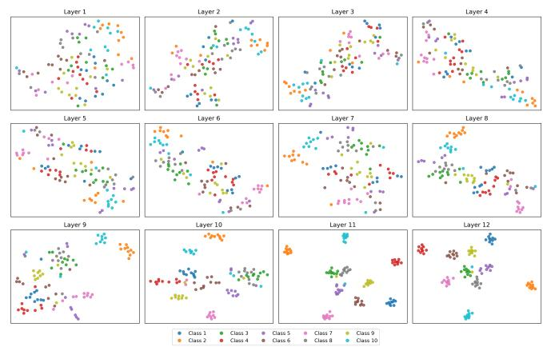
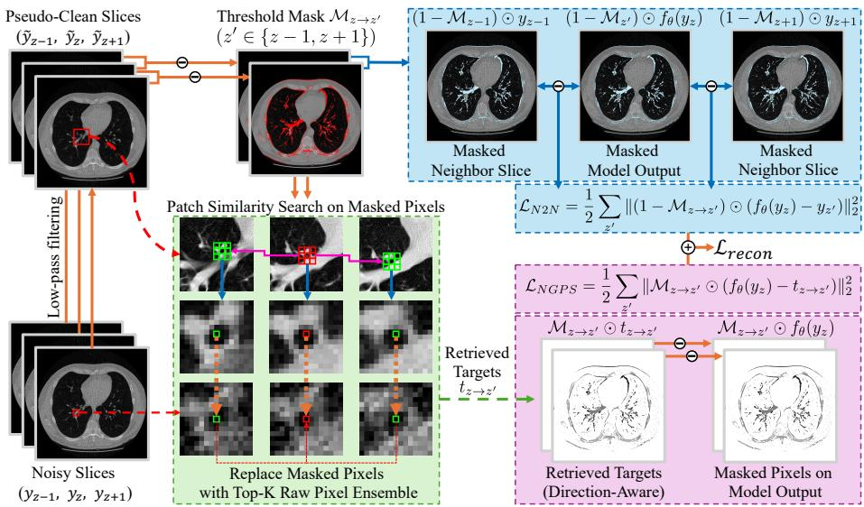

6 月 24 日：P-JEPA 等视觉表征主线更新
本期聚焦通用视觉表征、视觉语言预训练与视频自监督中最值得跟进的论文，并保留 CCF A/B、OpenReview 与 arXiv 状态线索。
先读 P-JEPA：它直接回答“视频 JEPA 如何处理超长程序步骤”，并且和 V-JEPA/V-JEPA2 系列最容易串起来。第二篇读 STAITUS，重点看作者如何把 slot 的 appearance consistency 与 pose dynamics 分开，这比单纯追踪指标更有方法启发。第三、四篇读 RBFN projection heads 和 Casper3D，分别对应 SSL 表征质量诊断和 2D foundation features 的 3D 化。随后读 Self-Filtering、LEViL、MultiMem，把多模态预训练的数据选择、伪标签蒸馏和 memorization 风险放在一起看；SPAR、RaysUp、DiT-Reward、Robust MAE 与两个扫读条目按需浏览即可。
论文索引
| 优先级 | 论文 | 类型 | 相关性 | 一句话理由 |
|---|---|---|---|---|
| P0 | P-JEPA: Procedural Video Representation Learning via Joint Embedding Predictive Architecture | arXiv 新增 · video JEPA / long-form representation | 高 | 长视频版 JEPA，直接命中通用视频/视觉表征自监督。 |
| P0 | Rethinking Object-Centric Representations for Video Dynamics Modeling | arXiv 新增 · object-centric video SSL | 高 | 把 slot consistency 的失败机制讲清楚，并给出可迁移的 appearance/pose 解耦。 |
| P1 | LEViL: Label-Efficient Video Learning via Zero-Shot Distillation over VLM-Generated Pseudo-Label Spaces | arXiv 新增 · video VLM distillation | 高 | VLM 伪标签空间 + 零样本蒸馏，适合跟视频表征预训练一起读。 |
| P1 | Radial Basis Function Networks as Projection Heads in Self-Supervised Learning | arXiv 新增 · SSL projector / representation diagnostics | 高 | 从 projector 结构和无标签诊断切入 SSL 表征质量，值得方法线精读。 |
| P1 | Lightweight 3D Feature Pretraining by Bayesian Inversion of 2D Foundation Models | arXiv 新增 · 2D VFM to 3D semantics | 高 | 把 2D 自监督/语言对齐特征 Bayesian 反演成 3D semantic state，迁移价值高。 |
| P1 | Data Selection Through Iterative Self-Filtering for Vision-Language Settings | arXiv 新增 · VLM data selection / CLIP pretraining | 高 | 把 CLIP 训练和数据过滤闭环起来，是多模态预训练的高优先级工程问题。 |
| P2 | Structural Assessment for Understanding and Guiding Dataset Distillation in Discrete Token Space | ECCV 2026 · arXiv 新增 · dataset distillation | 中高 | ECCV 接收；用离散视觉 token 解释/指导数据蒸馏，适合方法扫读。 |
| P2 | MultiMem: Measuring and Mitigating Memorization in Multi-Modal Contrastive Learning | ECCV 2026 · arXiv 新增 · multimodal contrastive learning | 中高 | ECCV 接收；多模态对比学习的记忆度量与缓解，贴近 VLM 预训练质量控制。 |
| P2 | SPAR: Semantic-Pixel Self-Alignment and Adaptive Routing for Unified Multimodal Models | ECCV 2026 · arXiv 新增 · unified multimodal tokenizer | 中高 | ECCV 接收；关注 semantic-pixel 自对齐和动态 token routing，适合 VFM/VLM 方向扫读。 |
| P2 | RaysUp: Ultra-light Universal Feature Upsampling via Geometry-Aware Ray Representation | ECCV 2026 · arXiv 新增 · VFM feature upsampling | 中高 | ECCV 接收；VFM-agnostic 特征上采样，对 dense 表征迁移有实际价值。 |
| P3 | DiT-Reward: Generative Representations for Text-to-Image Reward Modeling | arXiv 新增 · generative representation probing | 中 | 用生成 DiT 特征做 reward model，适合作为“生成模型表征可迁移性”扫读。 |
| P3 | Robust Representation Learning in Masked Autoencoders | arXiv replacement · ICPR 2026 · MAE analysis | 中高 | 旧稿更新为 ICPR 2026；MAE 表征分析可扫读，不按新论文计数。 |
| 扫读 | NGPS: Structure-Preserving Self-Supervised Denoising via Neighbor-Guided Patch Sampling | ECCV 2026 · arXiv 新增 · medical denoising / transferable SSL mechanism | 中 | 医学应用降级为扫读；方法里的邻域 patch pseudo-target 有可迁移性。 |
| 扫读 | A Comprehensive Study on Visual Token Redundancy for Discrete Diffusion-based Multimodal Large Language Models | arXiv replacement · CVPR 2026 · visual token efficiency | 中 | CVPR 2026 状态更新；视觉 token 冗余诊断对 VLM 表征接口有参考。 |
主线阅读

P-JEPA: Procedural Video Representation Learning via Joint Embedding Predictive Architecture
高相关；详见方法、贡献和实验边界。
方法：长视频版 JEPA，直接命中通用视频/视觉表征自监督

Rethinking Object-Centric Representations for Video Dynamics Modeling
高相关；详见方法、贡献和实验边界。
方法：把 slot consistency 的失败机制讲清楚，并给出可迁移的 appearance/pose 解耦

LEViL: Label-Efficient Video Learning via Zero-Shot Distillation over VLM-Generated Pseudo-Label Spaces
高相关；详见方法、贡献和实验边界。
方法：VLM 伪标签空间 + 零样本蒸馏，适合跟视频表征预训练一起读

Radial Basis Function Networks as Projection Heads in Self-Supervised Learning
高相关；详见方法、贡献和实验边界。
方法：从 projector 结构和无标签诊断切入 SSL 表征质量，值得方法线精读

Lightweight 3D Feature Pretraining by Bayesian Inversion of 2D Foundation Models
高相关；详见方法、贡献和实验边界。
方法：把 2D 自监督/语言对齐特征 Bayesian 反演成 3D semantic state，迁移价值高

Data Selection Through Iterative Self-Filtering for Vision-Language Settings
高相关；详见方法、贡献和实验边界。
方法：把 CLIP 训练和数据过滤闭环起来，是多模态预训练的高优先级工程问题

Structural Assessment for Understanding and Guiding Dataset Distillation in Discrete Token Space
中高相关；详见方法、贡献和实验边界。
方法：ECCV 接收；用离散视觉 token 解释/指导数据蒸馏，适合方法扫读

MultiMem: Measuring and Mitigating Memorization in Multi-Modal Contrastive Learning
中高相关；详见方法、贡献和实验边界。
方法：ECCV 接收；多模态对比学习的记忆度量与缓解，贴近 VLM 预训练质量控制

SPAR: Semantic-Pixel Self-Alignment and Adaptive Routing for Unified Multimodal Models
中高相关；详见方法、贡献和实验边界。
方法：ECCV 接收；关注 semantic-pixel 自对齐和动态 token routing，适合 VFM/VLM 方向扫读

RaysUp: Ultra-light Universal Feature Upsampling via Geometry-Aware Ray Representation
中高相关；详见方法、贡献和实验边界。
方法：ECCV 接收；VFM-agnostic 特征上采样，对 dense 表征迁移有实际价值

DiT-Reward: Generative Representations for Text-to-Image Reward Modeling
中相关；详见方法、贡献和实验边界。
方法：用生成 DiT 特征做 reward model，适合作为“生成模型表征可迁移性”扫读

Robust Representation Learning in Masked Autoencoders
中高相关；详见方法、贡献和实验边界。
方法：旧稿更新为 ICPR 2026；MAE 表征分析可扫读，不按新论文计数

NGPS: Structure-Preserving Self-Supervised Denoising via Neighbor-Guided Patch Sampling
中相关；详见方法、贡献和实验边界。
方法：医学应用降级为扫读；方法里的邻域 patch pseudo-target 有可迁移性

A Comprehensive Study on Visual Token Redundancy for Discrete Diffusion-based Multimodal Large Language Models
中相关；详见方法、贡献和实验边界。
方法：CVPR 2026 状态更新；视觉 token 冗余诊断对 VLM 表征接口有参考